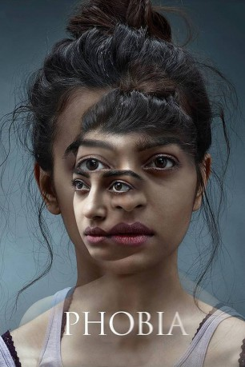

IMDB-Wertung: 6.9 / 10
IMDB-Wertung: 6.9 / 10  Metascore:
Metascore: 
Eine junge Künstlerin mit schweren Phobien befindet sich in der Zwickmühle: Aufgrund ihrer Ängste traut sie sich nicht vor die Tür – aber drinnen bleiben kann sie auch nicht. Was soll sie nur tun?
 IMDB-Wertung: 6.9 / 10 Metascore:
Eine junge Künstlerin mit schweren Phobien befindet sich in der Zwickmühle: Aufgrund ihrer Ängste traut sie sich nicht vor die Tür – aber drinnen bleiben kann sie auch nicht. Was soll sie nur tun?
Jahr: 2016
Dauer: 97 Minuten
FSK:
Land: Indien Studio: Next Gen FilmsTonspuren:
Untertitel:
Auflösung: 1080p (1920x808) Größe: 2775 MB
Genre: Thriller, Drama, Mystery
Regisseur: Pawan Kripalani
Drehbuch: Pawan Kripalani, Arun Sukumar, Pooja Ladha Surti
Soundtrack: Daniel B. George, Karan Gour
Darsteller:
Datei: X:\2016(N-Z)\Phobia – Allein mit der Angst (2016, FSK, 1920x808).mkv seit 24.04.2019
Festplatte: HD 2016(A-Z)
 Es gibt insgesamt 182 Filme in der Gruppe '2016(N-Z)'
Es gibt insgesamt 182 Filme in der Gruppe '2016(N-Z)'